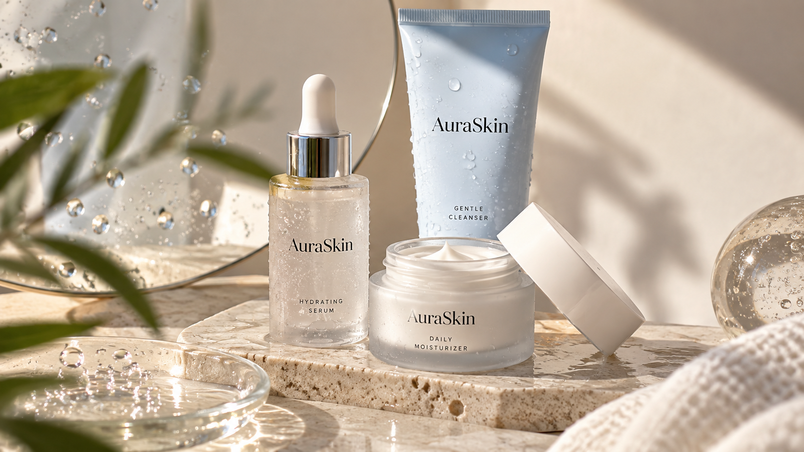
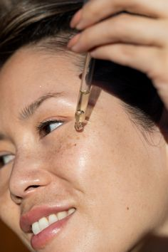
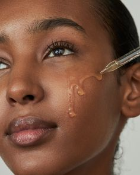
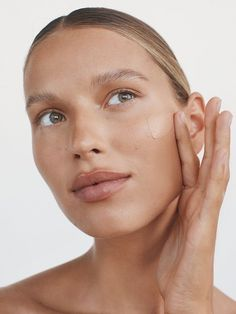
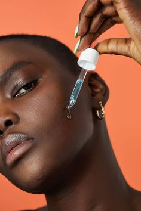
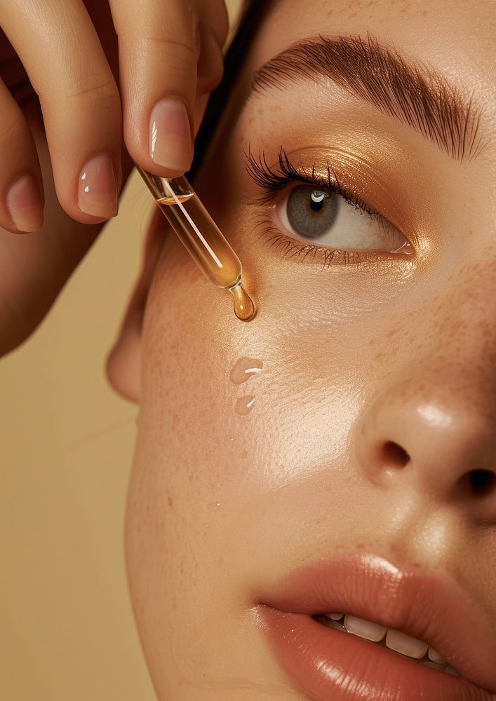
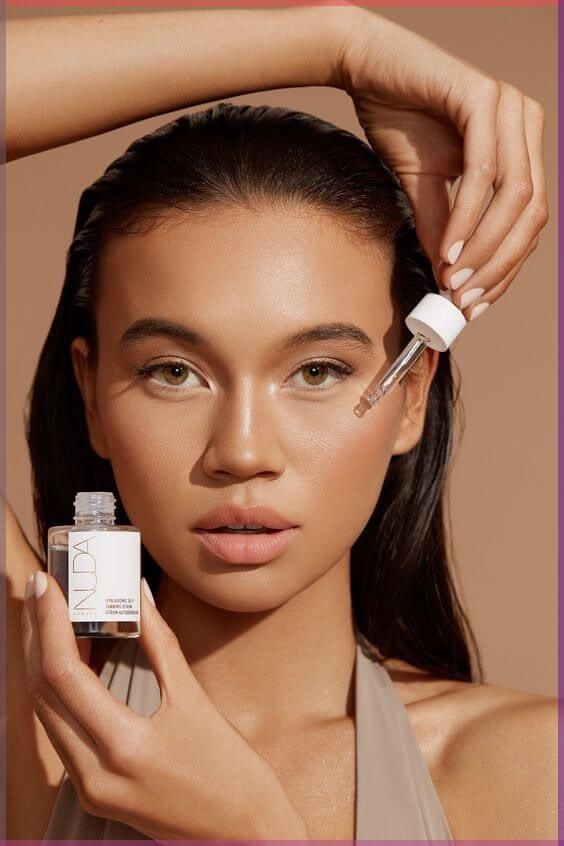

Somos AuraSkin, una marca de cosmética dedicada al cuidado de la piel. Ofrecemos serums y cremas faciales pensados para acompañar distintas necesidades, como hidratación, luminosidad, firmeza y cuidado diario.
Buscamos que cada persona pueda encontrar productos que se adapten a su piel y sumar el cuidado personal a su rutina de una manera simple y accesible.
Brindar un espacio cercano y confiable donde cada cliente encuentre calidad, atención personalizada y una experiencia que supere sus expectativas.
Convertirnos en un referente local reconocido por la innovación, la calidez en el trato y el compromiso con nuestra comunidad.
Compromiso: Damos lo mejor en cada detalle. Cercanía: Escuchamos y entendemos a quienes nos eligen. Calidad: Garantizamos excelencia en nuestros productos y servicios. Confianza: Construimos relaciones transparentes y duraderas.
Cuidado, bienestar y belleza forman parte de nuestra manera de entender el cuidado de la piel.





